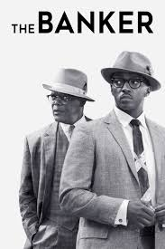
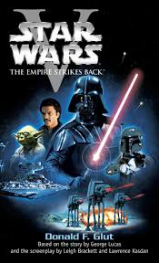

My Favorite Things
My name is Ryan. This Web Page lists my favorite foods, movies, and music.
My Favorite Foods
- Steak
- Shrimp
- Fruit
My Favorite Music
Welcome To The Party
Pop Smoke
Diamonds
Rihanna
Tang Clan
Wu-Tang Clan
My Favorite Movies
The Banker

I liked the movie because it is based on a true story.
The Dark Knight
I liked the movie because batman is one of my favorite comic characters.
Star Wars: The Empire Strikes Back

George Lucas is an amazing movie director.